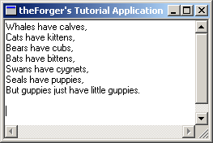

Example: app_one
I thought that since an example on creating controls on the fly, although usefull, would be quite pointless unless the application actually did something, so in this entry I will start the workings of a text editor and build upon it untill we reach a nearly useful program that supports opening, editing and saving text documents.
The first step, which this particular page covers will be simply creating the window and the EDIT control that will serve as the center of our program.
Starting with the skeleton code from the Simple Window application we add a #define as our control
ID and the following two message handlers into our window procedure:
#define IDC_MAIN_EDIT 101
case WM_CREATE:
{
HFONT hfDefault;
HWND hEdit;
hEdit = CreateWindowEx(WS_EX_CLIENTEDGE, "EDIT", "",
WS_CHILD | WS_VISIBLE | WS_VSCROLL | WS_HSCROLL | ES_MULTILINE | ES_AUTOVSCROLL | ES_AUTOHSCROLL,
0, 0, 100, 100, hwnd, (HMENU)IDC_MAIN_EDIT, GetModuleHandle(NULL), NULL);
if(hEdit == NULL)
MessageBox(hwnd, "Could not create edit box.", "Error", MB_OK | MB_ICONERROR);
hfDefault = GetStockObject(DEFAULT_GUI_FONT);
SendMessage(hEdit, WM_SETFONT, (WPARAM)hfDefault, MAKELPARAM(FALSE, 0));
}
break;
case WM_SIZE:
{
HWND hEdit;
RECT rcClient;
GetClientRect(hwnd, &rcClient);
hEdit = GetDlgItem(hwnd, IDC_MAIN_EDIT);
SetWindowPos(hEdit, NULL, 0, 0, rcClient.right, rcClient.bottom, SWP_NOZORDER);
}
break;
CreateWindowEx() API. We
pass in pre-registered class that we want, in this case the "EDIT" control class, and we get a standard edit
control window. When using dialogs to create our controls, we are basically writing a list of controls to create
so that then you call DialogBox() or CreateDialog() the system reads through the list
of controls in the dialog resource and calls CreateWindowEx() for each one with the position and
styles that were defined in the resource.
hEdit = CreateWindowEx(WS_EX_CLIENTEDGE, "EDIT", "",
WS_CHILD | WS_VISIBLE | WS_VSCROLL | WS_HSCROLL | ES_MULTILINE | ES_AUTOVSCROLL | ES_AUTOHSCROLL,
0, 0, 100, 100, hwnd, (HMENU)IDC_MAIN_EDIT, GetModuleHandle(NULL), NULL);
if(hEdit == NULL)
MessageBox(hwnd, "Could not create edit box.", "Error", MB_OK | MB_ICONERROR);
You can see that this call to CreateWindowEx() specifies quite a few styles, and it's not uncommon
to have many more, especially for the Common Controls which have a hearty list of options. The first 4 WS_
styles should be fairly obvious, we are creating the control as a child of our window, we want it to be visible, and
have vertical and horizontal scroll bars.
The 3 styles that are specific to EDIT controls (ES_MULTILINE | ES_AUTOVSCROLL | ES_AUTOHSCROLL) specify
that the EDIT control should contain multiple lines of text, and scroll automatically as you type beyond the bottom and
right hand side of the control respectively.
The regular window styles (WS_*) are
listed here.
And the extended windows styles (WS_EX_*) are explained under the
CreateWindowEx()
reference in MSDN, where you can also find links to the styles that are specific to each control
(ES_* in our case of the edit control).
We have specified our window handle as the parent of the control, and assigned it an ID of IDC_MAIN_EDIT which
we'll use later on to refer to the control just as you would if the control had been created on a dialog. The position
and size parameters don't mean too much at the moment since we will be resizing the control dynamically in the WM_SIZE
message so that it will always fit our window.
GetClientRect(hwnd, &rcClient);
hEdit = GetDlgItem(hwnd, IDC_MAIN_EDIT);
SetWindowPos(hEdit, NULL, 0, 0, rcClient.right, rcClient.bottom, SWP_NOZORDER);
Since we only have one control for now, the task is relatively simple. We use GetClientRect() to get the dimentions
of the Client Area of the window, the big (up untill now) blank area that does not include the borders, menu or caption. This
will fill in our RECT structure with the value, the left and top values will always
be 0, so you can usually just ignore them. The right and bottom values will give you the width and the
hight of the client area.
Next we simply get a handle to our edit control using GetDlgItem() which works just as well on regular windows as
it does on dialogs, and the call SetWindowPos() to move and size it to fill the entire client area. You can of course
change the values you pass into SetWindowPos() to do something like only fill half of the window's height, leaving
the bottom free to place other controls.
We'll be doing more of this with the common controls in the next couple of sections so you'll get more practice eventually.